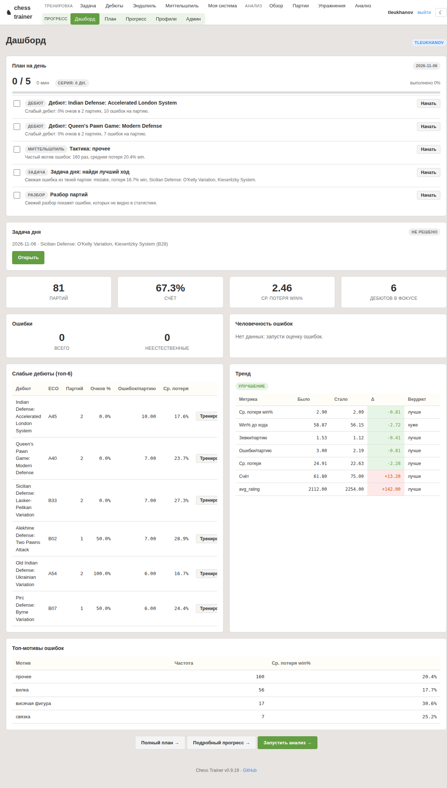

Советы слишком общие
«Играй лучше» и «считай варианты» не объясняют, где конкретно была ошибка и почему она стоила позиции.
Заявка на учебный MVP · 10–20 студентов
Chess Trainer разбирает реальные партии игрока, находит конкретные ошибки и превращает их в план на следующую неделю.
Проблема
«Играй лучше» и «считай варианты» не объясняют, где конкретно была ошибка и почему она стоила позиции.
Партия разобрана, но на следующей неделе игрок снова повторяет тот же паттерн.
Нужен быстрый и понятный второй взгляд между занятиями, а не только после проигранной партии.
Нужен не ещё один «рейтинговый анализ», а персональная причина ошибки и следующий тренированный шаг.
Аудитория
Игрокам уже нужен осознанный тренинг: они понимают дебют и правила, но регулярно теряют фокус, время и план в сложной позиции.
Продукт
Подтягиваем реальные игры с Lichess и сохраняем их для последующего анализа.
Находим критические ходы, считаем потерю win%, выделяем дебют, миттельшпиль и эндшпиль.
Собираем повторяющиеся ошибки и превращаем их в конкретные фокусы и упражнения.
Endgame trainer и Reading trainer по «Моей системе» закрепляют идею после анализа.
Reading trainer использует оригинальный учебный текст и собственные позиции, а не переписанную современную редакцию книги.
Формат ответа
Все карточки в этой версии — схематичные представления интерфейса, не скриншоты и не выдуманная аналитика конкретного студента.
Реальные экраны



Снимки сделаны локально в текущем аккаунте; персональная цель и статистика видны намеренно. Репозиторий с этой презентацией публичен, поэтому при открытии внешнего пилота скриншоты нужно заменить на анонимизированные версии.
Ключевой принцип
Система решает
Юридическая шахматная верность хода, оценка позиции, варианты и допустимые ответы проверяются Stockfish и правилами.
Система не решает
LLM не получает право объявлять ход «правильным», придумывать тактику или заменять расчёт убедительной формулировкой.
Что уже есть
Пилот
Цифры и кейсы студентов не выдумываем: до пилота их просто ещё не существует.
Что нужно от университета
data/data/Риски и честные ограничения
Перед открытием: rate limit, один heavy job, backup, доступ только по ролям.
План внедрения
data/ на постоянном диске, backup.Ask
Разрешить учебный пилот и предоставить VM для ограниченного web-MVP. После 2–3 недель — разбор результатов и решение, нужен ли следующий этап.
Вернуться к началу ↑